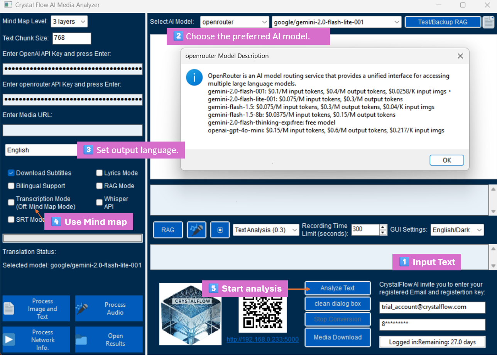
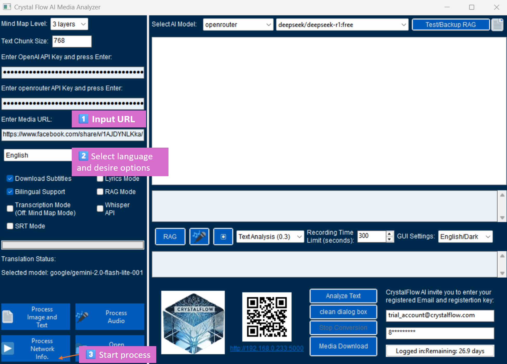

Chapter 2: Operation Guide
2.1 Basic Text Processing

Figure 2-1: Text Processing Workflow Diagram
- Enter text to be processed in the dialog box above the [QRcode]
- Extract text content from any document and paste into the dialog box
- Use [Clear Dialog] button to clear and re-enter if there are input errors
- Select AI Model
- Choose appropriate model type, refer to Chapter 3 AI Model Settings OpenRouter API Key Guide
- Confirm API key configuration
- Set [Mind Map Levels]
- Default: 3 layers
- Choose 4 layers if you need original text summary
- Choose [Transcript Mode] to modify grammar and paragraph punctuation, or cancel transcript to use [Mind Map Mode] for organizing text structure
- If input is lyrics, please also select [Lyrics Mode]
- Click [Analyze Text] to start processing
- Wait for processing to complete
- Review generated results
2.1.1 Basic Text Processing Feature Demo
Example: Innovator Traits Analysis
Below is a demonstration of using Crystal Flow AI Media Analyzer to process bilingual Chinese-English text:
- Mind Map Version - Interactive mind map with expandable/collapsible levels and content selection features
- Markdown Format Version - Structured text display, suitable for reading and copying
Feature Highlights:
- Supports bilingual Chinese-English content side-by-side display
- Automatically generates multi-level structured content
- Provides both mind map and text presentation formats
- Built-in content selection and export functionality
- Responsive design supporting various device viewing
Mind Map Control Features Link to Mind Map Example
Top-right Controls:
-
Level Selector: Controls the expansion level of the mind map
- Level 1: Shows only top-level topics
- Level 2: Shows up to second-level subtopics (default)
- Level 3: Shows up to third-level subtopics
- Level 4: Shows up to fourth-level subtopics
- All: Fully expands all levels
- Save Checked Items: Saves checked items as Markdown file
Bottom-right Controls:
-
markmap Toolbar:
- ➕ (Zoom In): Enlarge view
- ➖ (Zoom Out): Reduce view
- (Fullscreen): Toggle fullscreen mode
Usage Tips:
- For first-time viewing, start with Level 2 and gradually expand more levels
- Use zoom in/out buttons to adjust optimal viewing size
- After selecting important content, use Save Checked Items feature to save
- Fullscreen mode is suitable for presentations or detailed study
2.2 Video Processing Workflow

Figure 2-2: Video Processing Workflow Diagram
- Enter Video URL
- Supports YouTube, Facebook and other platforms
- Ensure video link is accessible
- Choose whether to download subtitles
- Automatically detects available subtitles
- Select subtitle language
- Select processing language
- Supports multiple language options
- Can choose to maintain original language
- Wait for download and processing to complete
- Monitor progress indicators
- Wait for system notifications
- View generated mind map and text summary
- Wait for Markdown format and mind map format processing results to automatically display in browser
2.3 Audio Recording Function Usage

Figure 2-3: Audio Recording Operation Interface
- Set recording time (default 300 seconds)
- Can customize recording duration
- Note system resource limitations
- Choose recording mode:
- Real-time recording:
- Direct conversion to text
- Suitable for quick processing
- Background recording:
- Save first, then process
- Suitable for long-term recording
- Real-time recording:
- Start/Stop recording
- Observe recording status indicators
- Note remaining time display
- Wait for processing to complete
- Check conversion progress
- Confirm output results
Practical Tips
- Pre-processing checks:
- Ensure stable network connection
- Check system audio settings
- Ensure sufficient storage space
- Performance optimization:
- Close unnecessary applications
- Avoid simultaneous multiple processing tasks
- Regularly clean temporary files
- Result management:
- Establish appropriate file naming conventions
- Regularly organize output files
- Backup important data promptly